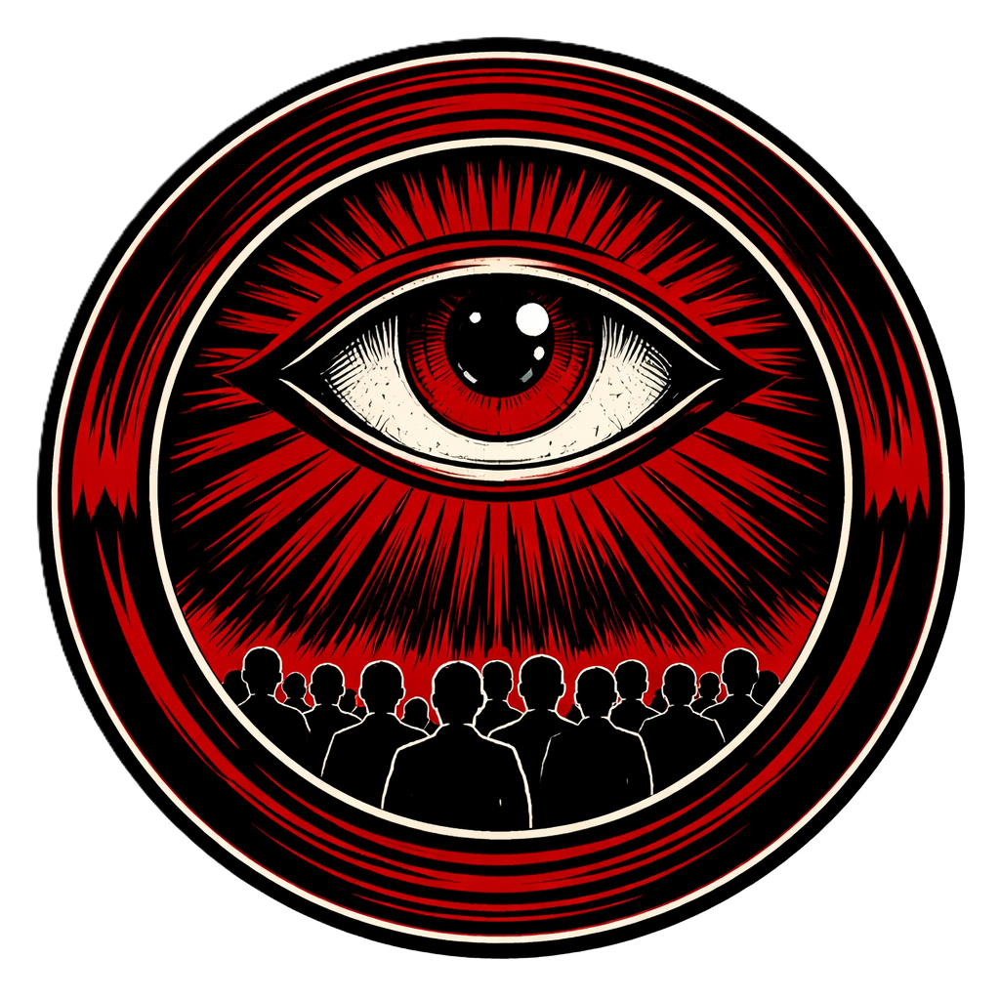

Reflexiones bajo la mirada
En esta sección, comparto mis pensamientos inspirados en los ecos de 1984. Cada entrada explora cómo la vigilancia, la manipulación de la verdad y la lucha por la libertad individual se manifiestan en nuestro mundo. Desde la "neolengua" digital hasta el "doblepensamiento" en la política, aquí encontrarás ideas que invitan a mirar más allá de lo evidente. Lee, reflexiona y comparte tus propias perspectivas.
